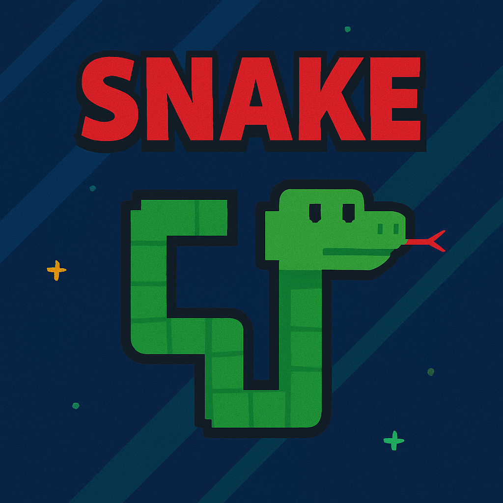

<main class="bg-gradient-to-br from-blue-100 to-blue-200 w-full h-screen">
    <section class="w-full flex flex-col items-center gap-5 justify-center py-10 max-sm:py-5">
        <div class="flex flex-col justify-center items-center gap-3 drop-shadow-xl/25 bg-white border-black border-2 rounded-2xl px-15 py-10 max-sm:px-10 mx-1 border-none">
            @if (profile) {
                <div class="max-w-xl flex gap-3 max-sm:flex-col items-center">
                    
                    <div class="flex flex-col justify-center">
                        <div class="flex gap-2">
                            <h3 class="text-2xl font-bold">{{profile.name}}</h3>
                            <p class="border border-none h-fit px-[0.5rem] rounded-2xl bg-gradient-to-r from-gray-200 to-gray-400 text-[0.8rem] font-bold">@{{profile.login}}</p>
                        </div>
                        <p class="">{{profile.bio}}</p>
                    </div>
                </div>
                <div class="flex gap-3">
                    <p class="select-none border border-none h-fit px-[0.5rem] rounded-2xl bg-gradient-to-r from-sky-700 to-sky-300 text-[0.8rem] font-bold text-white max-sm:text-[0.7rem]">{{profile.location}}</p>
                    <p class="select-none border border-none h-fit px-[0.5rem] rounded-2xl bg-gradient-to-r from-orange-400 to-violet-400 text-[0.8rem] font-bold text-white max-sm:text-[0.7rem]">Creada: {{profile.created_at | date:'d MMM, y'}}</p>
                    <p class="select-none border border-none h-fit px-[0.5rem] rounded-2xl bg-gradient-to-r from-green-500 to-green-700 text-[0.8rem] font-bold text-white max-sm:text-[0.7rem]">Activo: {{profile.updated_at | date:'d MMM, y'}}</p>
                </div>
                <div class="flex gap-3">
                    <p class="select-none border border-none h-fit px-[0.5rem] rounded-2xl bg-gray-400/60 text-[0.8rem] font-bold uppercase max-sm:text-[0.6rem]">Seguidores: {{profile.followers}}</p>
                    <p class="select-none border border-none h-fit px-[0.5rem] rounded-2xl bg-gray-400/60 text-[0.8rem] font-bold uppercase max-sm:text-[0.6rem]">Siguiendo: {{profile.following}}</p>
                    <p class="select-none border border-none h-fit px-[0.5rem] rounded-2xl bg-gray-400/60 text-[0.8rem] font-bold uppercase max-sm:text-[0.6rem]">Repos Publicos: {{profile.public_repos}}</p>
                </div>
                <div class="flex gap-2">
                    <a class="select-none bg-gradient-to-br from-orange-400 to-violet-500 rounded-full p-1 size-10 transition hover:scale-110" href="https://instagram.com/nnah.ro" target="_blank">
                        
                    </a>
                    <a class="select-none bg-black/20 rounded-full p-1 size-10 transition hover:scale-110" href="{{profile.html_url}}" target="_blank">
                        
                    </a>
                    <a class="select-none bg-gradient-to-br from-sky-200 to-sky-700 rounded-full p-1 size-10 transition hover:scale-110" href="https://www.linkedin.com/in/osvaldx/" target="_blank">
                        
                    </a>
                </div>
            } @else {
                <h2>Loading....</h2>
            }
        </div>
        <div class="flex flex-col justify-center items-center gap-3 drop-shadow-xl/25 bg-white border-black border-2 rounded-2xl px-8 py-10 max-sm:px-6 mx-1 border-none max-w-2xl w-full">
            
            <h2 class="text-xl sm:text-2xl font-bold text-blue-900 text-center">Juego Propio: Snake Game</h2>
            <p class="text-gray-800 text-sm sm:text-base text-center max-w-md leading-relaxed">
              Elegí este juego porque soy muy fanático de él y lo intenté recrear, de la forma más simple posible.
            </p>
            <p class="text-gray-600 text-sm text-center max-w-md leading-relaxed">
              Este juego trata de controlar una serpiente e ir comiendo manzanas para crecer.
            </p>
            <div class="bg-blue-50 border border-blue-200 rounded-lg px-4 py-2 text-gray-800 text-sm max-w-md text-center">
              <p class="font-semibold">Reglas:</p>
              <p>1. No chocar con las paredes</p>
              <p>2. No chocar con tu propia cola</p>
            </div>
          </div>
          
    </section>
</main>